건설기계설비기사 (2019-03-03 기출문제)
1과목: 재료역학
1. 그림과 같은 막대가 있다. 길이는 4 m이고 힘은 지면에 평행하게 200 N 만큼 주었을 때 o점에 작용하는 힘과 모멘트는?
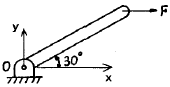
- Fox=0, Foy=200N, Mz=200Nㆍm
- Fox=200N, Foy=0, Mz=400Nㆍm
- Fox=200N, Foy=200N, Mz=200Nㆍm
- Fox=0, Foy=0, Mz=400Nㆍm
(정답률: 44%)

2. 두께 8 mm의 강판으로 만든 안지름 40 cm의 얇은 원통에 1 MPa의 내압이 작용할 때 강판에 발생하는 후프 응력(원주 응력)은 몇 MPa인가?
- 25
- 37.5
- 12.5
- 50
(정답률: 35%)
3. 그림과 같은 균일단면을 갖는 부정정보가 단순 지지단에서 모멘트 M0를 받는다. 단순지지단에서의 반력 Ra는? (단, 굽힘강성 EI는 일정하고, 자중은 무시한다.)
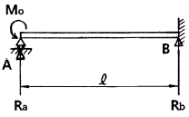
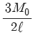
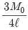
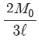
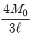
(정답률: 25%)
4. 진변형률(εT)과 진응력(σT)를 공칭 응력(σn)과 공칭 변형률(εn)로 나타낼 때 옳은 것은?
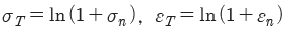
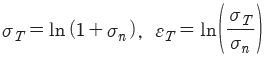
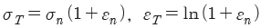
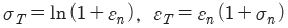
(정답률: 36%)
5. 폭 b=60 mm, 길이 L=340 mm의 균일강도 외팔보의 자유단에 집중하중 P=3 kN이 작용한다. 허용 굽힘응력을 65 MPa이라 하면 자유단에서 250 mm되는 지점의 두께 h는 약 몇 mm인가? (단, 보의 단면은 두께는 변하지만 일정한 폭 b를 갖는 직사각형이다.)
- 24
- 34
- 44
- 54
(정답률: 23%)
6. 부재의 양단이 자유롭게 회전할 수 있도록 되어있고, 길이가 4 m인 압축 부재의 좌굴 하중을 오일러 공식으로 구하면 약 몇 kN인가? (단, 세로탄성계수는 100 GPa이고, 단면 b × h=100 mm×50 mm이다.)
- 52.4
- 64.4
- 72.4
- 84.4
(정답률: 39%)
7. 평면 응력상태의 한 요소에 σx=100 MPa, σy=-50 MPa, τxy=0을 받는 평판에서 평면내에서 발생하는 최대 전단응력은 몇 MPa인가?
- 75
- 50
- 25
- 0
(정답률: 35%)
8. 탄성 계수(영계수) E, 전단 탄성 계수 G, 체적 탄성 계수 K사이에 성립되는 관계식은?
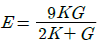
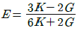
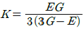
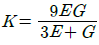
(정답률: 27%)
9. 바깥지름 50 cm, 안지름 30 cm의 속이 빈 축은 동일한 단면적을 가지며 같은 재질의 원형축에 비하여 약 몇 배의 비틀림 모멘트에 견딜 수 있는가? (단, 중공축과 중실축의 전단응력은 같다.)
- 1.1배
- 1.2배
- 1.4배
- 1.7배
(정답률: 33%)
10. 그림과 같은 단면에서 대칭축 n-n에 대한 단면 2차 모멘트는 약 몇 cm4인가?
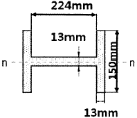
- 535
- 635
- 735
- 835
(정답률: 35%)
11. 단면적이 2 cm2이고 길이가 4 m인 환봉에 10 kN의 축 방향 하중을 가하였다. 이때 환봉에 발생한 응력은 몇 N/m2인가?
- 5000
- 2500
- 5×105
- 5×107
(정답률: 33%)
12. 양단이 고정된 직경 30 mm, 길이가 10 m인 중실축에서 그림과 같이 비틀림 모멘트 1.5 kN ㆍ m가 작용할 때 모멘트 작용점에서의 비틀림 각은 약 몇 rad인가? (단, 봉재의 전단탄성계수 G=100 GPa이다.)
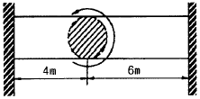
- 0.45
- 0.56
- 0.63
- 0.77
(정답률: 24%)
13. 그림과 같이 길이 ℓ인 단순 지지된 보 위를 하중 W가 이동하고 있다. 최대 굽힘응력은?
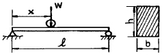
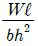
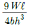
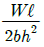
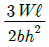
(정답률: 39%)
14. 그림과 같은 트러스가 점 B에서 그림과 같은 방향으로 5 kN의 힘을 받을 때 트러스에 저장되는 탄성에너지는 약 몇 kJ인가? (단, 트러스의 단면적은 1.2 cm2, 탄성계수는 106 Pa이다.)
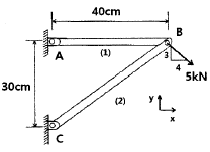
- 52.1
- 106.7
- 159.0
- 267.7
(정답률: 24%)
15. 길이 1 m인 외팔보가 아래 그림처럼 q=5 kN/m의 균일 분포하중과 P=1 kN의 집중 하중을 받고 있을 때 B점에서의 회전각은 얼마인가? (단, 보의 굽힘강성은 EI이다.)
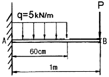
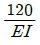
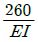
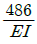
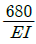
(정답률: 20%)
16. 그림과 같은 단순지지보에서 2 kN/m의 분포하중이 작용할 경우 중앙의 처짐이 0이 되도록 하기 위한 힘 P의 크기는 몇 kN인가?
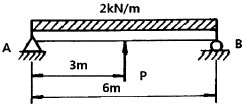
- 6.0
- 6.5
- 7.0
- 7.5
(정답률: 33%)
17. 그림과 같이 길이 ℓ=4 m의 단순보에 균일 분포하중 ω가 작용하고 있으며 보의 최대 굽힘응력 σmax=85 N/cm2일 때 최대 전단응력은 약 몇 kPa인가? (단, 보의 단면적은 지름이 11 cm인 원형단면이다.)
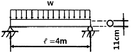
- 1.7
- 15.6
- 22.9
- 25.5
(정답률: 24%)
18. 그림과 같은 치차 전동 장치에서 A치차로부터 D치차로 동력을 전달한다. B와 C치 차의 피치원의 직경의 비가
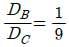
일 때, 두 축의 최대 전단응력들이 같아지게 되는 직경의 비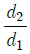
은 얼마인가?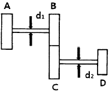
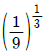
- 1/9
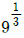
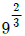
(정답률: 23%)
19. 그림과 같은 외팔보에 균일분포하중 ω가 전 길이에 걸쳐 작용할 때 자유단의 처짐 δ는 얼마인가? (단, E: 탄성계수, I: 단면2차모멘트이다.)
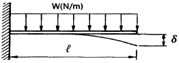
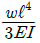
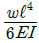
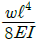
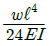
(정답률: 36%)
20. 그림과 같이 단면적이 2 cm2인 AB및 CD막대의 B점과 C점이 1 cm만큼 떨어져 있다. 두 막대에 인장력을 가하여 늘인 후 B점과 C점에 핀을 끼워 두 막대를 연결하려고 한다. 연결 후 두 막대에 작용하는 인장력은 약 몇 kN인가? (단, 재료의 세로탄성계수는 200 GPa이다.)
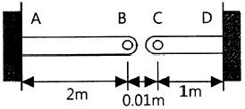
- 33.3
- 66.6
- 99.9
- 133.3
(정답률: 33%)
2과목: 기계열역학
21. 압력 2 MPa, 300 ℃의 공기 0.3 kg이 폴리트로픽 과정으로 팽창하여, 압력이 0.5 MPa로 변화하였다. 이때 공기가 한 일은 약 몇 kJ인가? (단, 공기는 기체상수가 0.287 kJ/(kg ㆍ K)인 이상기체이고, 폴리트로픽 지수는 1.3이다.)
- 416
- 157
- 573
- 45
(정답률: 25%)
22. 다음 중 기체상수(gas constant, R[kJ/(kg ㆍ K)] 값이 가장 큰 기체는?
- 산소(O2)
- 수소(H2)
- 일산화탄소(CO)
- 이산화탄소(CO2)
(정답률: 36%)
23. 이상기체 1 kg이 초기에 압력 2 kPa, 부피 0.1 m3를 차지하고 있다. 가역등온과정에 따라 부피가 0.3 m3로 변화했을 때 기체가 한 일은 약 몇 J인가?
- 9540
- 2200
- 954
- 220
(정답률: 32%)
24. 이상적인 오토사이클에서 열효율을 55 %로 하려면 압축비를 약 얼마로 하면 되겠는가? (단, 기체의 비열비는 1.4이다.)
- 5.9
- 6.8
- 7.4
- 8.5
(정답률: 35%)
25. 밀폐계가 가역정압 변화를 할 때 계가 받은 열량은?
- 계의 엔탈피 변화량과 같다.
- 계의 내부에너지 변화량과 같다.
- 계의 엔트로피 변화량과 같다.
- 계가 주위에 대해 한 일과 같다.
(정답률: 37%)
26. 유리창을 통해 실내에서 실외로 열전달이 일어난다. 이때 열전달량은 약 몇 W인가? (단, 대류열전달계수는 50 W/(m2 ㆍ K), 유리창 표면온도는 25 ℃, 외기온도는 10 ℃, 유리창면적은 2 m2이다.)
- 150
- 500
- 1500
- 5000
(정답률: 32%)
27. 어느 내연기관에서 피스톤의 흡기과정으로 실린더 속에 0.2 kg의 기체가 들어 왔다. 이것을 압축할 때 15 kJ의 일이 필요하였고, 10 kJ의 열을 방출하였다고 한다면, 이 기체 1 kg당 내부에너지의 증가량은?
- 10 kJ/kg
- 25 kJ/kg
- 35 kJ/kg
- 50 kJ/kg
(정답률: 31%)
28. 다음 중 강도성 상태량(intensive property)이 아닌 것은?
- 온도
- 압력
- 체적
- 밀도
(정답률: 35%)
29. 600 kPa, 300 K 상태의 이상기체 1 kmol이 엔탈피가 등온과정을 거쳐 압력이 200 kPa로 변했다. 이 과정동안의 엔트로피 변화량은 약 몇 kJ/K인가? (단, 일반기체상수
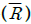
은 8.31451 kJ/(kmol ㆍ K)이다.)- 0.782
- 6.31
- 9.13
- 18.6
(정답률: 33%)
30. 그림과 같은 단열된 용기 안에 25 ℃의 물이 0.8 m3 들어있다. 이 용기 안에 100 ℃, 50 kg의 쇳덩어리를 넣은 후 열적 평형이 이루어졌을 때 최종 온도는 약 몇 ℃인가? (단, 물의 비열은 4.18 kJ/(kg ㆍ K), 철의 비열은 0.45 kJ/(kg ㆍ K)이다.)
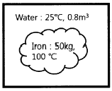
- 25.5
- 27.4
- 29.2
- 31.4
(정답률: 32%)
31. 실린더에 밀폐된 8 kg의 공기가 그림과 같이 P1=800 kPa, 체적 V1=0.27m3에서 P2=350 kPa, 체적 V2=0.80 m3으로 직선 변화하였다. 이 과정에서 공기가 한 일은 약 몇 kJ인가?
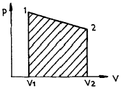
- 3⑤
- 334
- 362
- 390
(정답률: 34%)
32. 어떤 기체 동력장치가 이상적인 브레이턴 사이클로 다음과 같이 작동할 때 이 사이클의 열효율은 약 몇 %인가? (단, 온도(T)-엔트로피(s) 선도에서 T1=30 ℃, T2=200 ℃, T3=1060 ℃, T4=160 ℃이다.)
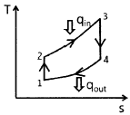
- 81 %
- 85 %
- 89 %
- 92 %
(정답률: 34%)
33. 이상기체에 대한 다음 관계식 중 잘못된 것은? (단, Cu는 정적비열, Cp는 정압비열, u는 내부에너지, T는 온도, V는 부피, h는 엔탈피, R은 기체상수, k는 비열비이다.)
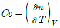
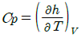
- Cp-Cu=R
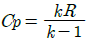
(정답률: 27%)
34. 열역학 제2법칙에 관해서는 여러 가지 표현으로 나타낼 수 있는데, 다음 중 열역학 제2법칙과 관계되는 설명으로 볼 수 없는 것은?
- 열을 일로 변환하는 것은 불가능하다.
- 열효율이 100 %인 열기관을 만들 수 없다.
- 열은 저온 물체로부터 고온 물체로 자연적으로 전달되지 않는다.
- 입력되는 일 없이 작용하는 냉동기를 만들 수 없다.
(정답률: 30%)
35. 계의 엔트로피 변화에 대한 열역학적 관계식 중 옳은 것은? (단, T는 온도, S는 엔트로피, U는 내부에너지, V는 체적, P는 압력, H는 엔탈피를 나타낸다.)
- Tds=dU-PdV
- Tds=dH-PdV
- Tds=dU=VdP
- Tds=dH-VdP
(정답률: 31%)
36. 공기 1 kg이 압력 50 kPa, 부피 3 m3인 상태에서 압력 900 kPa, 부피 0.5 m3인 상태로 변화할 때 내부 에너지가 160 kJ 증가하였다. 이 때 엔탈피는 약 몇 kJ이 증가하였는가?
- 30
- 185
- 235
- 460
(정답률: 31%)
37. 체적이 일정하고 단열된 용기 내에 80 ℃, 320 kPa의 헬륨 2 kg이 들어 있다. 용기 내에 있는 회전날개가 20 W의 동력으로 30분 동안 회전한다고 할 때 용기 내의 최종 온도는 약 몇 ℃인가? (단, 헬륨의 정적비열은 3.12 kJ/(kg ㆍ K)이다.)
- 81.9 ℃
- 83.3 ℃
- 84.9 ℃
- 85.8 ℃
(정답률: 31%)
38. 그림과 같은 Rankine 사이클로 작동하는 터빈에서 발생하는 일은 약 몇 kJ/kg인가? (단, h는 엔탈피, s는 엔트로피를 나타내며, h1=191.8 kJ/kg, h2=193.8 kJ/kg, h3=2799.5 kJ/kg, h4=2007.5 kJ/kg이다.)
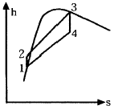
- 2.0 kJ/kg
- 792.0 kJ/kg
- 26⑤.7 kJ/kg
- 1815.7 kJ/kg
(정답률: 34%)
39. 시간당 380000 kg의 물을 공급하여 수증기를 생산하는 보일러가 있다. 이 보일러에 공급하는 물의 엔탈피는 830 kJ/kg이고, 생산되는 수증기의 엔탈피는 3230 kJ/kg이라고 할 때, 발열량이 32000 kJ/kg인 석탄을 시간당 34000 kg씩 보일러에 공급한다면 이 보일러의 효율은 약 몇 %인가?
- 66.9 %
- 71.5 %
- 77.3 %
- 83.8 %
(정답률: 30%)
40. 터빈, 압축기, 노즐과 같은 정상 유동장치의 해석에 유용한 몰리에(Molier) 선도를 옳게 설명한 것은?
- 가로축에 엔트로피, 세로축에 엔탈피를 나타내는 선도이다.
- 가로축에 엔트로피, 세로축에 온도를 나타내는 선도이다.
- 가로축에 엔트로피, 세로축에 밀도를 나타내는 선도이다.
- 가로축에 비체적, 세로축에 압력을 나타내는 선도이다.
(정답률: 25%)
3과목: 기계유체역학
41. 원관에서 난류로 흐르는 어떤 유체의 속도가 2배로 변하였을 때, 마찰계수가 변경 전 마찰계수의
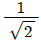
로 줄었다. 이때 압력손실은 몇 배로 변하는가?- √2배
- 2√2배
- 2배
- 4배
(정답률: 27%)
42. 점성계수가 0.3 N ㆍ s/m2이고, 비중이 0.9인 뉴턴유체가 지름 30 mm인 파이프를 통해 3 m/s의 속도로 흐를 때 Reynolds수는?
- 24.3
- 270
- 2700
- 26460
(정답률: 30%)
43. 어떤 액체의 밀도는 890 kg/m3, 체적 탄성계수는 2200 MPa이다. 이 액체 속에서 전파되는 소리의 속도는 약 몇 m/s인가?
- 1572
- 1483
- 981
- 345
(정답률: 31%)
44. 펌프로 물을 양수할 때 흡입측에서의 압력이 진공 압력계로 75 mmHg(부압)이다. 이 압력은 절대 압력으로 약 몇 kPa인가? (단, 수은의 비중은 13.6이고, 대기압은 760 mmHg이다.)
- 91.3
- 10.4
- 84.5
- 23.6
(정답률: 28%)
45. 동점성계수가 10 cm2/s이고 비중이 1.2인 유체의 점성계수는 몇 Pa ㆍ s인가?
- 0.12
- 0.24
- 1.2
- 2.4
(정답률: 30%)
46. 평판 위를 어떤 유체가 층류로 흐를 때, 선단으로부터 10 cm 지점에서 경계층두께가 1 mm일 때, 20 cm 지점에서의 경계층두께는 얼마인가?
- 1 mm
- √2 mm
- √3 mm
- 2 mm
(정답률: 25%)
47. 온도 27 ℃, 절대압력 380 kPa인 기체가 6 m/s로 지름 5 cm인 매끈한 원관 속을 흐르고 있을 때 유동상태는? (단, 기체상수는 187.8 N ㆍ m/(kg ㆍ K), 점성계수는 1.77×10-5 kg/(m ㆍ s), 상, 하 임계 레이놀즈수는 각각 4000, 2100이라 한다.)
- 층류영역
- 천이영역
- 난류영역
- 포텐셜영역
(정답률: 31%)
48. 2 m×2 m×2 m의 정육면체로 된 탱크 안에 비중이 0.8인 기름이 가득 차 있고, 위 뚜껑이 없을 때 탱크의 한 옆면에 작용하는 전체 압력에 의한 힘은 약 몇 kN인가?
- 7.6
- 15.7
- 31.4
- 62.8
(정답률: 26%)
49. 일정 간격의 두 평판 사이에 흐르는 완전 발달된 비압축성 정상유동에서 x는 유동방향, y는 평판 중심을 0으로 하여 x방향에 직교하는 방향의 좌표를 나타낼 때 압력강하와 마찰손실의 관계로 옳은 것은? (단, P는 압력, τ는 전단응력, μ는 점성계수(상수)이다.)
(정답률: 11%)
50. 비중 0.85인 기름의 자유표면으로부터 10 m 아래에서의 계기압력은 약 몇 kPa인가?
- 83
- 830
- 98
- 980
(정답률: 36%)
51. 물을 사용하는 원심 펌프의 설계점에서의 전양정이 30 m이고, 유량은 1.2 m3/min이다. 이 펌프를 설계점에서 운전할 때 필요한 축 동력이 7.35 kW라면 이 펌프의 효율은 약 얼마인가?
- 75 %
- 80 %
- 85 %
- 90 %
(정답률: 32%)
52. 그림과 같은 원형관에 비압축성 유체가 흐를 때 A단면의 평균속도가 V1일 때 B단면에서의 평균속도 V는?
(정답률: 29%)
53. 유속 3 m/s로 흐르는 물 속에 흐름방향의 직각으로 피토관을 세웠을 때, 유속에 의해 올라가는 수주의 높이는 약 몇 m인가?
- 0.46
- 0.92
- 4.6
- 9.2
(정답률: 34%)
54. 2차원 유동장이 로 주어질 때, 가속도장 는 어떻게 표시되는가? (단, 유동장에서 c는 상수를 나타낸다.)
(정답률: 15%)
55. 그림과 같이 유속 10 m/s인 물 분류에 대하여 평판을 3 m/s의 속도로 접근하기 위하여 필요한 힘은 약 몇 N인가? (단, 분류의 단면적은 0.01 m2이다.)
- 130
- 490
- 1350
- 1690
(정답률: 20%)
56. 물(비중량 9800 N/m3) 위를 3 m/s의 속도로 항진하는 길이 2 m인 모형선에 작용하는 조파저항이 54 N이다. 길이 50 m인 실선을 이것과 상사한 조파상태인 해상에서 항진시킬 때 조파 저항은 약 얼마인가? (단, 해수의 비중량은 10075 N/m3이다.)
- 43 kN
- 433 kN
- 87 kN
- 867 kN
(정답률: 12%)
57. 골프공 표면의 딤플(dimple, 표면 굴곡)이 항력에 미치는 영향에 대한 설명으로 잘못된 것은?
- 딤플은 경계층의 박리를 지연시킨다.
- 딤플이 층류경계층을 난류경계층으로 천이시키는 역할을 한다.
- 딤플이 골프공의 전체적인 항력을 감소시킨다.
- 딤플은 압력저항보다 점성저항을 줄이는데 효과적이다.
(정답률: 16%)
58. 다음과 같은 베르누이 방정식을 적용하기 위해 필요한 가정과 관계가 먼 것은? (단, 식에서 P는 압력, ρ는 밀도, V는 유속, γ는 비중량, Z는 유체의 높이를 나타낸다.)
- 정상 유동
- 압축성 유체
- 비점성 유체
- 동일한 유선
(정답률: 34%)
59. 중력은 무시할 수 있으나 관성력과 점성력 및 표면장력이 중요한 역할을 하는 미세구조물 중 마이크로 채널 내부의 유동을 해석하는데 중요한 역할을 하는 무차원 수 만으로 짝지어진 것은?
- Reynolds 수, Froude 수
- Reynolds 수, Mach 수
- Reynolds 수, Weber 수
- Reynolds 수, Cauchy 수
(정답률: 28%)
60. 정상, 2차원, 비압축성 유동장의 속도성분이 아래와 같이 주어질 때 가장 간단한 유동함수(Ψ)의 형태는? (단, u는 x방향, υ는 y방향의 속도성분이다.)
- Ψ=-2x2+Y2
- Ψ=-x2+y2
- Ψ=-x2+2y2
- Ψ=4x2+4y2
(정답률: 30%)
4과목: 유체기계 및 유압기기
61. 유체기계의 일종인 공기기계에 관한 설명으로 옳지 않은 것은?
- 기체의 단위체적당 중량이 물의 약 1/830(20 ℃ 기준)로서 작은 편이다.
- 기체는 압축성이므로 압축, 팽창을 할 때 거의 온도변화가 발생하지 않는다.
- 각 유로나 관로에서의 유속은 물인 경우보다 수배 이상으로 높일 수 있다.
- 공기기계의 일종인 압축기는 보통 압력 상승이 1 kgf/cm2 이상인 것을 말한다.
(정답률: 66%)
62. 다음 중 프로펠러 수차에 관한 설명으로 옳지 않은 것은?
- 일반적으로 3~90 m의 저낙차로서 유량이 큰 곳에 사용한다.
- 반동 수차에 속하며, 물이 미치는 형식은 축류 형식에 속한다.
- 회전차의 형식에서 고정익의 형태를 가지면 카플란 수차, 가동익의 형태를 가지면 지라르 수차라고 한다.
- 프로펠러 수차의 형식은 축류 펌프와 같고, 다만 에너지의 주고 받는 방향이 반대일 뿐이다.
(정답률: 54%)
63. 토크 컨버터의 주요 구성요소들을 나타낸 것은?
- 구동기어, 종동기어, 버킷
- 피스톤, 실린더, 체크밸브
- 밸런스디스크, 베어링, 프로펠러
- 펌프회전차, 터빈회전차, 안내깃(스테이터)
(정답률: 72%)
64. 진공펌프는 기체를 대기압 이하의 저압에서 대기압까지 압축하는 압축기의 일종이다. 다음 중 일반 압축기와 다른 점을 설명한 것으로 옳지 않은 것은?
- 흡입압력을 진공으로 함에 따라 압력비는 상당히 커지므로 격간용적, 기체누설을 가급적 줄여야 한다.
- 진공화에 따라서 외부의 액체, 증기, 기체를 빨아들이기 쉬워서 진공도를 저하시킬 수 있으므로 이에 주의를 요한다.
- 기체의 밀도가 낮으므로 실린더 체적은 축동력에 비해 크다.
- 송출압력과 흡입압력의 차이가 작으므로 기체의 유로 저항이 커져도 손실동력이 비교적 적게 발생한다.
(정답률: 56%)
65. 다음 각 수차들에 관한 설명 중 옳지 않은 것은?
- 펠턴 수차는 비속도가 가장 높은 형식의 수차이다.
- 프란시스 수차는 반동형 수차에 속한다.
- 프로펠러 수차는 저낙차 대유량인 곳에 주로 사용된다.
- 카플란 수차는 축류 수차에 해당한다.
(정답률: 59%)
66. 다음 중 일반적으로 유체기계에 속하지 않는 것은?
- 유압 기계
- 공기 기계
- 공작 기계
- 유체 전송 장치
(정답률: 72%)
67. 공동현상(Cavitation)이 발생했을 때 일어나는 현상이 아닌 것은?
- 압력의 급변화로 소음과 진동이 발생한다.
- 펌프 흡입관의 손실수두나 부차적 손실이 큰 경우 공동현상이 발생되기 쉽다.
- 양정, 효율 및 축동력이 동시에 급격히 상승한다.
- 깃의 벽면에 부식(Pitting)이 일어나 사고로 이어질 수 있다.
(정답률: 77%)
68. 다음 왕복펌프의 효율에 관한 설명 중 옳지 않은 것은?
- 피스톤 1회 왕복중의 실제 흡입량 V와 행정체적 V0의 비를 체적효율(ηυ)이라고 하며, 로 나타낸다.
- 피스톤이 유체에 주는 도시동력 L과 펌프의 축동력 L1과의 비를 기계효율(ηm)이라고 하며, 로 나타낸다.
- 펌프에 의하여 최종적으로 얻어지는 압력증가량 p와 흡입 행정 중에 피스톤 작동면에 작용하는 평균유효압력 pm의 비를 수력효율(ηh)이라고 하며, 으로 나타낸다.
- 펌프의 전효율 η는 체적효율, 기계효율, 수력효율의 전체 곱으로 나타낸다.
(정답률: 50%)
69. 수차에 직결되는 교류 발전기에 대해서 주파수를 f(Hz), 발전기의 극수를 p라고 할 때회전수 n(rpm)을 구하는 식은?
(정답률: 49%)
70. 양정 20 m, 송출량 0.3 m3/min, 효율 70 %인 물펌프의 축동력은 약 얼마인가?
- 1.4 kW
- 4.2 kW
- 1.4 MW
- 4.2 MW
(정답률: 63%)
71. 유공압 실린더의 미끄러짐 면의 운동이 간헐적으로 되는 현상은?
- 모노 피딩(Mono－feeding)
- 스틱 슬립(Stick－slip)
- 컷 인 다운(Cut in－down)
- 듀얼 액팅(Dual acting)
(정답률: 75%)
72. 한 쪽 방향으로 흐름은 자유로우나 역방향의 흐름을 허용하지 않는 밸브는?
- 체크 밸브
- 셔틀 밸브
- 스로틀 밸브
- 릴리프 밸브
(정답률: 77%)
73. 감압밸브, 체크밸브, 릴리프밸브 등에서 밸브시트를 두드려 비교적 높은 음을 내는 일종의 자려 진동 현상은?
- 유격 현상
- 채터링 현상
- 폐입 현상
- 캐비테이션 현상
(정답률: 74%)
74. 저 압력을 어떤 정해진 높은 출력으로 증폭하는 회로의 명칭은?
- 부스터 회로
- 플립플롭 회로
- 온오프제어 회로
- 레지스터 회로
(정답률: 76%)
75. 점성계수(coefficient of viscosity)는 기름의 중요 성질이다. 점도가 너무 낮을 경우 유압기기에 나타나는 현상은?
- 유동저항이 지나치게 커진다.
- 마찰에 의한 동력손실이 증대된다.
- 각 부품 사이에서 누출 손실이 커진다.
- 밸브나 파이프를 통과할 때 압력손실이 커진다.
(정답률: 65%)
76. 다음 중 유량제어밸브에 의한 속도제어회로를 나타낸 것이 아닌 것은?
- 미터 인 회로
- 블리드 오프 회로
- 미터 아웃 회로
- 카운터 회로
(정답률: 71%)
77. 유체를 에너지원 등으로 사용하기 위하여 가압 상태로 저장하는 용기는?
- 디퓨져
- 액추에이터
- 스로틀
- 어큐뮬레이터
(정답률: 68%)
78. 베인펌프의 일반적인 구성 요소가 아닌 것은?
- 캠링
- 베인
- 로터
- 모터
(정답률: 59%)
79. 유압 파워유닛의 펌프에서 이상 소음 발생의 원인이 아닌 것은?
- 흡입관의 막힘
- 유압유에 공기 혼입
- 스트레이너가 너무 큼
- 펌프의 회전이 너무 빠름
(정답률: 68%)
80. 지름이 2 cm인 관속을 흐르는 물의 속도가 1 m/s이면 유량은 약 몇 cm3/s인가?
- 3.14
- 31.4
- 314
- 3140
(정답률: 60%)
5과목: 건설기계일반 및 플랜트배관
81. 타이어식과 비교한 무한궤도식 불도저의 특징으로 틀린 것은?
- 접지압이 작다.
- 견인력이 강하다.
- 기동성이 빠르다.
- 습지, 사지에서 작업이 용이하다.
(정답률: 61%)
82. 버킷 용량은 1.34 m3, 버킷 계수는 1.2, 작업효율은 0.8, 체적환산계수는 1, 1회 사이클 시간은 40초라고 할 때 이 로더의 운전시간당 작업량은 약 몇 m3/h인가?
- 24
- 53
- 84
- 116
(정답률: 61%)
83. 쇼벨계 굴삭기계의 작업구동방식에서 기계 로프식과 유압식을 비교한 것 중 틀린것은?
- 기계 로프식은 굴삭력이 크다.
- 유압식은 구조가 복잡하여 고장이 많다.
- 유압식은 운전조작이 용이하다.
- 기계 로프식은 작업성이 나쁘다.
(정답률: 48%)
84. 짐칸을 옆으로 기울게 하여 짐을 부리는 트럭은?
- 사이드(side)덤프트럭
- 리어(rear)덤프트럭
- 다운(down)덤프트럭
- 버텀(bottom)덤프트럭
(정답률: 75%)
85. 콘크리트를 구성하는 재료를 저장하고 소정의 배합 비율대로 계량하고 MIXER에 투입하여 요구되는 품질의 콘크리트를 생산하는 설비는?
- ASPHALT PLANT
- BATCHER PLANT
- CRUSHING PLANT
- CHEMICAL PLANT
(정답률: 56%)
86. 건설기계의 내연기관에서 연소실의 체적이 30 cc이고 행정체적이 240 cc인 경우, 압축비는 얼마인가?
- 6 : 1
- 7 : 1
- 8 : 1
- 9 : 1
(정답률: 59%)
87. 다음 중 1차 쇄석기(crusher)는?
- 조(jaw) 쇄석기
- 콘(cone) 쇄석기
- 로드 밀(rod mill) 쇄석기
- 해머 밀(hammer mill) 쇄석기
(정답률: 56%)
88. 버킷 준설선에 관한 설명으로 옳지 않은 것은?
- 토질에 영향이 적다.
- 암반 준설에는 부적합하다.
- 준선 능력이 크며 대용량 공사에 적합하다.
- 협소한 장소에서도 작업이 용이하다.
(정답률: 54%)
89. 기계부품에서 예리한 모서리가 있으면 국부적인 집중응력이 생겨 파괴되기 쉬워지는 것으로 강도가 감소하는 것은?
- 잔류응력
- 노치효과
- 질량효과
- 단류선
(정답률: 70%)
90. 기중기의 작업장치(전부장치)에 대한 설명으로 옳지 않은 것은?
- 드래그라인 : 수중굴착에 용이
- 백호 : 지면보다 아래 굴착에 용이
- 셔블 : 지면보다 낮은 곳의 굴착에 용이
- 크램셸 : 수중굴착 및 깊은 구멍 굴착에 용이
(정답률: 49%)
91. 슬루스 밸브라고 하며, 유체의 흐름을 단속하려고 할 때 사용하는 밸브는?
- 글로브밸브
- 게이트밸브
- 볼 밸브
- 버터플라이밸브
(정답률: 63%)
92. 동관용 공작용 공구가 아닌 것은?
- 링크형 파이프커터
- 플레어링 툴 세트
- 사이징 툴
- 익스팬더
(정답률: 47%)
93. 관 또는 환봉을 동력에 의해 톱날이 상하 또는 좌우 왕복을 하며 공작물을 한쪽 방향으로 절단하는 기계는?
- 동력 나사 절삭기
- 파이프 가스 절단기
- 숫돌 절단기
- 핵 소잉 머신
(정답률: 50%)
94. 최고사용 압력이 5 MPa인 배관에서 압력 배관용 탄소강관의 인장강도가 38 kg/mm2인 것을 사용할 때 스케줄 번호(sch No.)는? (단, 안전율 5이며, SPPS-38의 sch No. 10, 20, 40, 60, 80이다.)
- 20
- 40
- 60
- 80
(정답률: 30%)
95. 나사 내는 탭(tap)의 재질은 탄소공구강, 합금공구강, 고속도강이 있는데 표준경도로 적당한 것은?
- Hrc 40
- Hrc 50
- Hrc 60
- Hrc 70
(정답률: 51%)
96. 배관 용접부의 비파괴 검사방법 중에서 널리 사용하고 있는 방법으로 물질을 통과하기 쉬운 X선 등을 사용하며 균열, 융합 불량, 용입 불량, 기공, 슬래그 섞임, 언더 컷 등의 결함을 검출할 때 가장 적절한 방법은?
- 누설검사
- 육안검사
- 초음파검사
- 방사선투과검사
(정답률: 67%)
97. 강관의 표시 방법 중 냉간가공 아크용접 강관은?
- －S－H
- －A－C
- －E－C
- －S－C
(정답률: 63%)
98. 글로브 밸브(globe valve)에 관한 설명으로 틀린 것은?
- 유체의 흐름에 따른 관내 마찰 저항 손실이 작다.
- 개폐가 쉽고 유량 조절용으로 적합하다.
- 평면형, 원뿔형, 반구형, 반원형 디스크가 있다.
- 50 mm 이하는 나사형, 65 mm 이상은 플랜지형 이음을 사용한다.
(정답률: 37%)
99. 유류배관설비의 기밀시험을 할 때 사용해서는 안 되는 가스는?
- 질소가스
- 수소
- 탄산가스
- 아르곤
(정답률: 62%)
100. 스테인리스 강관의 용접 시 열 영향 방지 대책으로 옳은 것은?
- 용접봉은 가능한 한 직경이 작은 것을 사용하여 모재에 입열을 적게 하는 것이 좋다.
- 티타늄(Ti) 등의 안정화 원소를 첨가하여 니켈 탄화물의 형성을 방지한다.
- 탄소(C)가 0.1 % 이상 함유된 오스테나이트 스테인리스강에는 일반적으로 304 L, 316 L 등의 용접봉이 사용된다.
- 탄화물 석출의 억제를 위해 모재 및 용착금속의 탄화물 석출온도 범위를 가능한 장시간에 걸쳐 냉각시킨다.
(정답률: 40%)